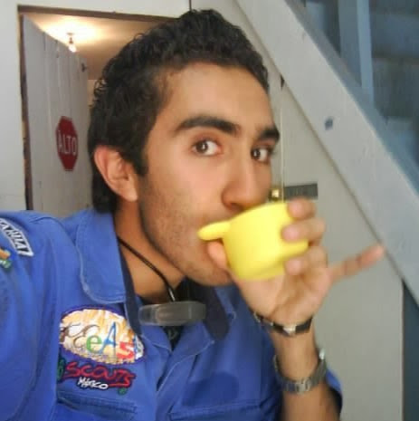

Biografía Académica
|

|
|
| Materias | 7am-8am | 8am-9am | 9am-10am | 10am-11am | 11am-12pm | 12pm-1pm | 1pm-2pm |
| Lunes | Base de datos | TecWeb | DAyP2 | Probabilidad | Ingles | Investigación | Diseño y Arqui |
| Martes | Base de datos | TecWeb | DAyP2 | Probabilidad | Ingles | Investigación | Diseño y Arqui |
| Miercoles | Base de datos | TecWeb | DAyP2 | Probabilidad | Ingles | Investigación | Diseño y Arqui |
| Jueves | Base de datos | TecWeb | DAyP2 | Probabilidad | Ingles | Diseño y Arqui | Diseño y Arqui |
| Viernes | Base de datos | TecWeb | DAyP2 | Probabilidad | Ingles |
Mi formación escolar, como una persona común lo haría, fué en kinder, primaria, secundaria, preparatoria y universidad actual. En la primaria (2000-2006) erá un chico con calificaciones poco mas del promedio común, solía destacarme mas de lo normal, saliendo con buen promedio el 2006. En la secundaria comenzé a tomar interes por el dibujo y las computadoras, sabiendo que algún día se iban a inovar, progresando así al taller de dibujo tecnico, tomandolo por aspiración a como mi padre.
Luego de terminar la secundaria en el 2009 opté por entrar al COBACH Plantel 10, encontando ahí materias que me ayudarían a entrar a la universidad. En el transcurso de los 3 años de bachillerato, procuré entrar a materias que me dieran especialización en física, cálculo e informática, el cual salí del bachillerato en el 2012 con reconocimientos de "Auxiliar en informática" y "Auxiliar en fisico-matemático".
Actualmente asisto a la Universidad Autónoma de Chihuahua, en la carrera de Ingeniería de Software. He decidido seguir la ingenieria debido a que las tecnologías, computadorias y demás, me han llamado mucho la atención, pero a causa de que en el bachillerato no pude aprender nada fundamental para mi carrera he tenido que aprender a ser un poco mas autónomo para la programación, el COBACH solo se basa en examenes de ingreso a carreras correspondientes a preferencia.